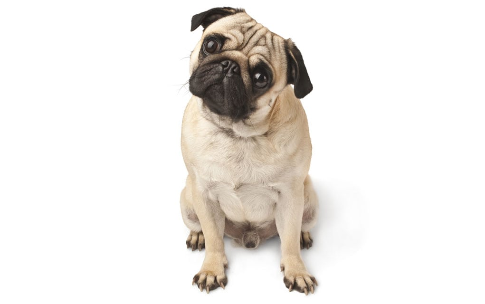

MOPS
Početna
Pomeranac
Mops
Buldog
Naručite
Kontakt
Osnovne karakteristike:
Mops je mnogo više od jednog slatkog, malenog i druželjubivog psa. Izvor je energičnosti, snage i hrabrosti.
Bilo da je okružen drugim ljubimcima, ili je jedini pas u porodici, savršeno će se uklopiti u svako okruženje.
Jednostavan je, nije zahtevan ni u kom pogledu i svako bi voleo da ima takvog kućnog ljubimca. Okrugle, tamne i
neodoljive oči učiniće da mu ispunite svaku želju, bez dvoumljenja i oklevanja. Svakako, mops će to uzvratiti
velikom ljubavlju, pažnjom i emocionalnom vezanošću za vlasnika, i druge članove porodice.Sigurno je da mops
ima kineske korene, prepoznate kroz dva slična tipa, a to su Luo Jie i Ha Pa. Dok je prvi tip imao kratku i
oštru dlaku, Ha Pa je karakterisala duga i gusta dlaka, i to je uglavnom jedina razlika, zbog čega se Luo Jie
psi smatraju precima današnjem mopsu. Smatrani su za prestižnu rasu, koja je krasila i zabavljala poznate u
njihovim palatama i carskim domovima. Još od 206. godine pre nove ere, kada je dinastija Han bila na prestolu,
mops je bio poznat u Kini. Tako, do 1279. godine nalazili su se i u porodičnom dvoru dinastije Sung, kao verni
pratioci. Njihove bore deo su istorije, i prvenstveno se nisu razvijale kao tako izražene i duboke. Danas su
njihov zaštitni znak, a ujedno i podsećaju na princa u kineskim simboličnim obeležjima i oznakama. Tibet i Japan
takođe potvrđuju postojanje rase pasa koja neodoljivo podseća na čuvenog mopsa.
